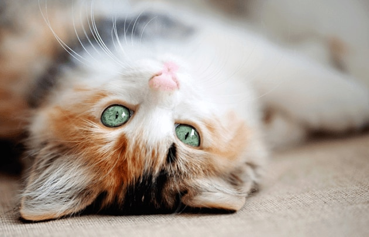

Заголовок
Абзац
- Довести воду до кипения
- Засыпать ингредиенты
- Варить 10 минут
- Гаспачо
- лёгкий холодный суп из перетёртых в пюре свежих овощей
- Том-ям
-
кисло-острый суп на основе куриного бульона с креветками, курицей, рыбой или другими
морепродуктами
- Борщ
- разновидность супа на основе свёклы, которая придаёт борщу характерный красный цвет
-
Омлет
-
Блинчики
- Молоко
- Яйца
- Мука
- Сахар
- Соль
- Разрыхлитель
- Торт
- Пирог

 Лого гугла от 2015 года
Лого гугла от 2015 года